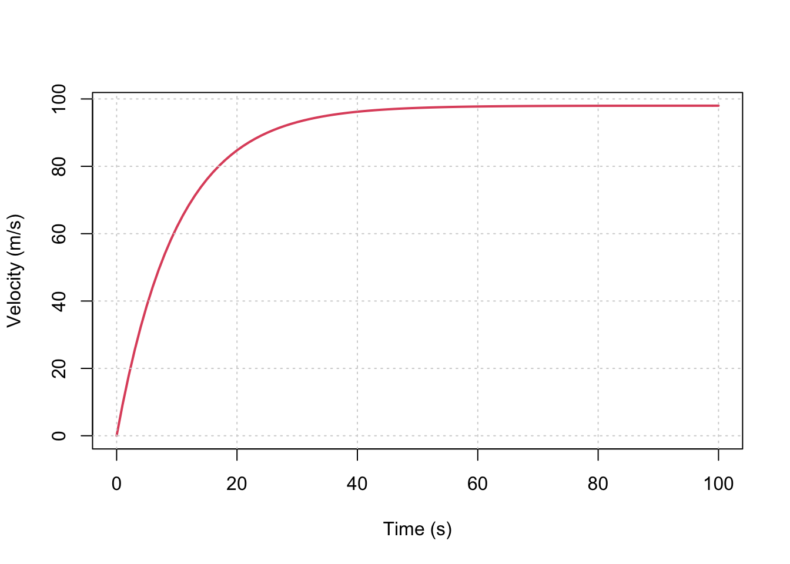

Chapter 1 建模方法
本章极少数值方法建模的基本方法论，涉及一些基础的建模思路和数学基础。
1.1 建模基本思路
我们提出一个CLAMS的基本建模思路。这个建模思路可以描述为：
- 描述物理过程，形成概念模型（或认知模型）(Conceptual Model, or Mind Model)
- 使用物理规律(Physical Laws)
- 列出合理假设，简化问题 (Assumptions)
- 使用数学公式表达物理规律和假设(Math equations)
- 求解数学公式(Solver)
求解数学公式的过程，可以尝试寻找其解析解(Analytical solution)，也可以使用数值方法求得数值解(Numerical Solution)。
数值方法本质上是对离散（非连续）时空模型中因变量(Dependant variable)分布和变化的数学近似描述，从理论的解析解到数值解虽然损失了精度，但解析解通常无法求得，而数值方法可给出误差可接受的近似解。
落体运动
描述 问题描述下图。

问题：任意\(t>0\)时刻的速度，即\(v(t) = ?\)。
建模步骤：
认知模型：
落体运动(Fall motion): 落体运动是指物体在重力作用下从一定高度自由下落的运动。
当考虑风阻时，物体的运动会受到空气阻力的影响，这种阻力通常与物体的速度、形状、大小以及空气的密度有关。在实际的落体运动中，空气阻力会对物体的速度产生显著影响，主要体现在以下几个方面：
- 减小物体的加速度：在自由落体运动中，如果不考虑空气阻力，物体将以恒定的加速度（重力加速度）下落。但当考虑空气阻力时，物体受到的合外力将不再等于其重力，导致物体的净加速度减小。根据牛顿第二定律，物体的净加速度等于合外力除以物体的质量。因此，空气阻力的存在会导致物体的速度增长速度减慢。
- 使物体达到终端速度：随着物体下落速度的增加，空气阻力也会增大，直到与重力相平衡。此时，物体的速度不再增加，达到一个恒定值，这个速度称为终端速度。终端速度取决于物体的形状、大小以及空气的密度。一般来说，形状较大、大小较小的物体终端速度较小，而形状较小、大小较大的物体终端速度较大。
- 影响物体的下落轨迹：空气阻力不仅影响物体的速度，还可能影响物体的下落轨迹。例如，在北半球自由落体运动中，空气阻力可能导致物体的偏离，使得落体运动的轨迹发生偏移。
在实际应用中，如汽车空气动力学研究，风阻是一个重要的考虑因素。通过风洞实验和数值计算，可以研究模型周围流动的物理特征，理解气动力产生机理，研究气动力控制方法等。这些研究有助于优化汽车等物体的设计，以减少风阻、提高效率。
总的来说，考虑风阻的落体运动是一个复杂的物理过程，涉及到流体力学、物体的动力学特性以及环境因素等多个方面。通过实验和理论分析，可以更准确地描述和预测物体在实际环境中的运动行为。
物理定律： 牛顿定律： \(F = ma\)。
牛顿第二定律的描述是：物体的加速度与作用在物体上的合外力成正比，与物体的质量成反比，且加速度的方向与合外力的方向相同。牛顿第二定律是经典力学中描述物体运动的基本定律之一，由艾萨克·牛顿在1687年出版的《自然哲学的数学原理》中提出。
假设：
- 假设1： \(v(t=0) = 0\)
- 假设2：\(F_{drag}(t) \propto v(t)\)，即\(F_{drag} = cv\)。
假设1属于初始条件，即进行计算最一开始的系统状态，基于这个“初始状态”系统开始变化。 假设2属于系统内过程的假设，这里假设了风的阻力与运动速度的一次方成正比。我们其实也可以假设风阻力与速度的二次方成正比，这一假设在实际应用中更常见。
数学公式：
由\(F = ma\)和\(\frac{dv}{dt} = a\)可得：
\[\tag{1} \frac{dv}{dt} = a = \frac{F}{m}\]
根据物体受力分析, 其受到向下的重力\(F_{g} = mg\)和向上的空气阻力\(F_{drag} = cv\)，空气阻力在此假设与物体运动速度成正比关系。则其受力平衡公式为： \[\tag{2} F = F_{g} - F_{drag} = mg - cv\]
综合公式（1）和（2），则得到： \[\tag{3} \frac{dv}{dt} = g - \frac{c}{m} v\]
 自由落体运动的受力分析
自由落体运动的受力分析公式求解：
初始条件：\(v(0) = 0\)
积分求解(解析解)： \[v(t) = \frac {mg}{c}\left[ 1- exp(-\frac{c}{m}t) \right]\]
结果绘图：
c = 15 # drag coeefficient
g = 9.8 # Gravity
m = 150 # Mass in kg
x = seq(0,100, 1) # Time
y = m*g/c *(1 - exp(-1 * c / m * x)) # Vecocity
plot(x, y, type='l', xlab='Time (s)', ylab='Velocity (m/s)', col=2, lwd=2);
grid()
变量表:
- \(v(t)\) - 随时间变化的物体速度
- \(m\) - 物体质量
- \(g\) - 重力加速度
- \(a\) - 物体运动的加速度
- \(c\) - 空气阻力系数
- \(F\) - 物体所受的力
- \(F_{g}\) - 重力
- \(F_{drag}\) - 空气阻力
1.1.1 落体运动的数值求解方法
前一节我们使用了解析解对落体运动进行了求解。但是现实中很多问题很难寻找的解析解，但是可以通过不同的数值方法和计算方案得到所需时间和空间上某一变量的数值解，数值解是解析解的近似。
针对以上的落体运动，我们首先跳过CLAMS方法的前4步，我们使用数值方法来完成Solver这个步骤。
1.1.1.1 求解数学公式(Solver)
- 初始条件：\(v(0) = 0\)
- 控制方程：\[\frac{dv}{dt} = g - \frac{c}{m} v\]
- 根据极限理论，当时间不长无限趋近于0时，我们可以根据前一时刻的系统状态（状态），和此时的变化趋势（导数）计算出相邻时刻的系统状态（未来状态）。 则： \[v_{t-1} = v_{t} + \frac{dv}{dt} * \Delta t\] 更进一步，可得到：\[v_{t-1} = v_{t} + [g - \frac{c}{m} \cdot v_{t-1}]* \Delta t\]
我们可以在Excel中进行如下计算。
| Step | Time | V_t | dV/dt | V_t+1 | V_analytic | Error | ERROR % |
|---|---|---|---|---|---|---|---|
| 1 | 0 | 0.0000 | 4.9000 | 4.9000 | 0.0000 | 0.0000 | 0 |
| 2 | 0.5 | 4.9000 | 4.6550 | 9.5550 | 4.7795 | 0.1205 | 0.025208325 |
| 3 | 1 | 9.5550 | 4.4223 | 13.9773 | 9.3259 | 0.2291 | 0.024562365 |
| 4 | 1.5 | 13.9773 | 4.2011 | 18.1784 | 13.6506 | 0.3266 | 0.023927978 |
| 5 | 2 | 18.1784 | 3.9911 | 22.1695 | 17.7644 | 0.4140 | 0.023305128 |
| 6 | 2.5 | 22.1695 | 3.7915 | 25.9610 | 21.6775 | 0.4919 | 0.022693776 |
| 7 | 3 | 25.9610 | 3.6020 | 29.5629 | 25.3998 | 0.5612 | 0.022093876 |
| 8 | 3.5 | 29.5629 | 3.4219 | 32.9848 | 28.9406 | 0.6224 | 0.021505376 |
| 9 | 4 | 32.9848 | 3.2508 | 36.2356 | 32.3086 | 0.6762 | 0.02092822 |
| 10 | 4.5 | 36.2356 | 3.0882 | 39.3238 | 35.5124 | 0.7231 | 0.020362349 |
| … | … | ||||||
| … | … |
使用R进行计算结果为：
c = 15 # drag coeefficient
g = 9.8 # Gravity
m = 150 # Mass in kg
dt = 0.1
x = seq(0,100, dt) # Time
# Analytic solution
y = m*g/c *(1 - exp(-1 * c / m * x)) # Vecocity
# Numeric solution
nx= length(x)
y_ana = rep(NA, nx)
y_ana[1]=0
for(i in 2:nx){
dydt = g - c / m * y_ana[i-1]
y_ana[i] = y_ana[i-1] + dydt * dt
}
df = data.frame('Time'=x, 'V'=y, 'V_ana'=y_ana)
par(mfrow=c(2, 1), mar=c(3, 3, 1,0))
matplot(x, cbind(y, y_ana), type='l', xlab='Time (s)', ylab='Velocity (m/s)',
col=1:2, lwd=2, lty=1:2); grid()
legend('bottomright', c('Analytic', 'Numeric'), col=1:2, lwd=2, lty=1:2)
grid()
plot(abs(y - y_ana));
mtext('Error', side=3, line=-2, font=2, cex=2)
grid()
1.2 解析解与数值解
数值解(Numeric solution)和解析解(Analytic solution)是解决科学和工程问题时得到的两种不同类型的解。它们的主要区别在于解的形式和求解过程：
- 形式上的区别：
- 解析解：通常是一个精确的数学表达式，可以是一个公式、方程或者函数。解析解能够给出问题的完整描述，包括所有的细节和特性。
- 数值解：是一个近似值，通常是一个数字或者一组数字。数值解是通过数值方法在计算机上计算得到的，只能近似地表示问题的解。
- 求解过程的区别：
- 解析解：通过数学推导和符号运算得到。这种方法通常需要对问题进行简化和抽象，以便于找到精确的数学表达式。
- 数值解：通过数值算法和计算机程序实现。数值方法不需要对问题进行简化，而是直接在计算机上模拟问题的物理过程，通过迭代和逼近来获得解。
- 精确度：
- 解析解：是精确的，没有误差，可以提供问题的完整信息。
- 数值解：是近似的，存在一定的误差。这种误差可能来源于数值方法的离散化、舍入误差等。
- 适用性：
- 解析解：适用于那些可以找到精确数学表达式的问题。解析解在理论上非常有价值，因为它们提供了对问题的深入理解。
- 数值解：适用于那些难以找到解析解的复杂问题，或者解析解过于复杂难以直接使用的情况。数值解在工程和科学实践中非常常见，因为它们可以处理实际问题中的复杂性和不确定性。
- 计算成本：
- 解析解：一旦找到，计算成本通常很低，因为解析解可以直接用于计算。
- 数值解：可能需要较高的计算成本，尤其是在需要高精度解或者问题规模很大时。
- 通用性：
- 解析解：通常具有很好的通用性，因为它们是精确的数学表达式，可以应用于各种情况。
- 数值解：可能需要针对具体问题调整数值方法和参数，以获得更好的近似效果。
简洁地总结了数值解和解析解在不同方面的主要区别。
| 特性 | 数值解 | 解析解 |
|---|---|---|
| 形式 | 近似值，通常是一个数字或一组数字。 | 精确的数学表达式，如公式、方程或函数。 |
| 求解过程 | 通过数值算法和计算机程序实现。 | 通过数学推导和符号运算得到。 |
| 精确度 | 近似，存在误差。 | 精确，没有误差。 |
| 适用性 | 适用于难以找到解析解的复杂问题。 | 适用于可以找到精确数学表达式的问题。 |
| 计算成本 | 可能需要较高的计算成本。 | 一旦找到，计算成本通常很低。 |
| 通用性 | 需要针对具体问题调整数值方法和参数。 | 具有很好的通用性，可以直接用于计算。 |
总的来说，解析解和数值解各有优势和局限，选择哪种解法取决于问题的性质、求解的精度要求以及可用的计算资源。在实际应用中，数值解因其灵活性和适用性而被广泛使用。